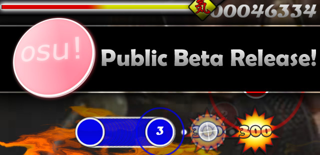

Istorie: început (2007-2009)
2007 - Big Bang-ul jocului
osu! a început sub numele de “ouentest”. În doar 16 ore, pe data de 1 iulie, jocul avea primul mod de joc, cel standard de azi, și un editor de hărți foarte simplistic. Nu erau decât cercurile, nu și sliderele sau spinnerele. Până la sfârșitul lui iulie, jocul avea o implementare primitivă pentru slidere. Ușor, ușor se adaugă elemente precum un nou meniu principal, funcțiile de copiere și alipire în editor, bara de HP, și mai multe. În data de 17 septembrie 2007, osu! intră este lansat ca și un joc beta, adică unul care încă se află în stadiul de dezvoltare, și un articol pe un website specializat pentru jocuri de acest tip despre joc apare. Încă de la început, communitatea de jocuri de ritm încep să încerce jocul.

Până la sfârșitul anului se adaugă modurile Easy, NoFail (pentru că atunci nu existau pauze), NoVideo (opțiunea cu același nume de azi), și Hidden; sistemul de chat (bazat de IRC), sistemul de verificare a hărților, sistemul de replay, suport pentru skin-uri create de către jucători, și mai multe.
2008 - Mari progrese
Multe lucruri importante s-au întâmplat în 2008, probabil cel mai important lucru a fost introducerea lui Bancho, componenta care se ocupă cu partea de server a jocului. Jucători primesc posibilitea de a vorbi, a juca cu mulți jucători, în general a interacționa cu alți jucători în timp real. Multe moduri sunt adăugate:
- Hard Rock
- Sudden Death
- Double Time
- Relax
- Half Time
- Flashlight
- Spun Out
- Auto Se adaugă alte moduri de joc: Taiko și Catch The Beat. Multe optimizări sunt realizate iar communitatea era în continuă creștere.
2009 - iPhone
În 2007, Steve Jobs a urcat pe scenă și a prezentat tututor cel mai mare salt tehnologic de atunci, iPhone. În 2009, osu! este portat pe iPhone.